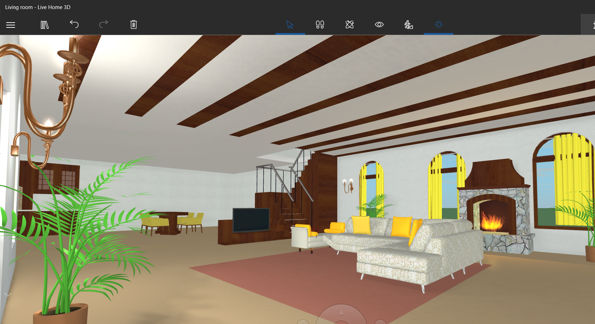
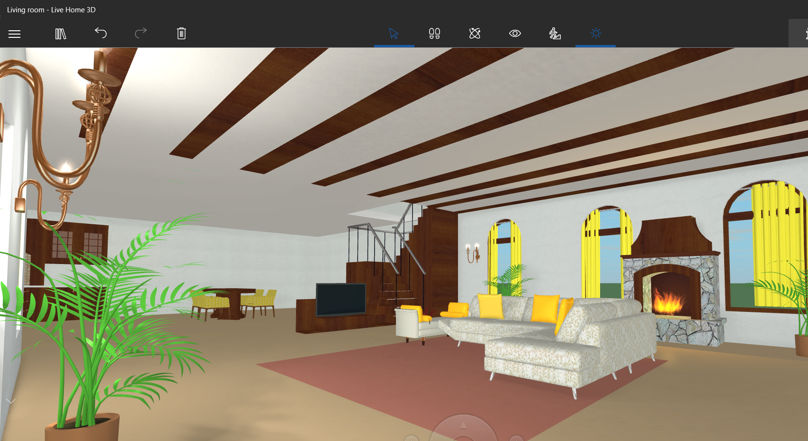

Welcome to my site, which will introduce you to all things Spain. After falling in love with spanish guitar music, I wanted to educate myself to my roots as a mestizo Mexican, after all, they express themselves very romantically, how can you not be amuzed by these people?
Here you can compare the amount of visitors Spain brings each year per city:
| Barcelona | 8,100,00 |
| Valencia | 2,000,000 |
The spanish culture consists of a romantic esteem popularized through its spanish guitar music and its charming architecture and cobblestone streets.
Spaniards have a touch of class to them. Imagine dancing to an infatuating folkloric dance!
 

Famous Spanish Celebrities
List of Spanish Scientists